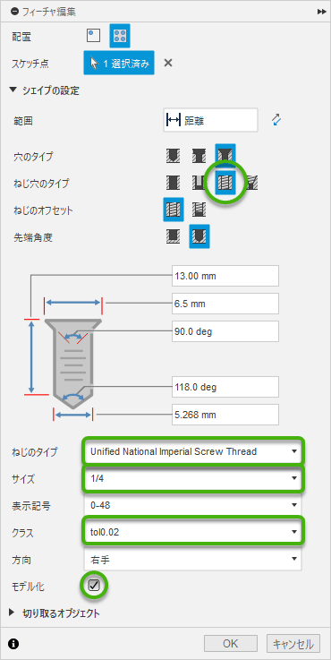

[メモ] Fusion360 備忘録
2025/01/29 |
記事のソース
Fusion360 関連の雑多なメモ。随時追加する
三脚・雲台用のネジとネジ穴
Fusion360で三脚・雲台用のインチネジ(W1/4)の設定 #3Dプリンタ - Qiita
上記記事に記載された XML でネジ穴を作ろうとしたものの、我が家の Adventurer3 + FlashPrint のデフォルト設定ではキツすぎたので、寸法をカスタマイズしていくつか試した。
設定ファイルのインストール
- unified-national-imperial-screw-thread-r1.zip をダウンロードして展開する。
-
XML ファイルを
%LOCALAPPDATA%\Autodesk\webdeploy\production\(長い16進数)\Fusion\Server\Fusion\Configuration\ThreadData\に配置する。%LOCALAPPDATA%はエクスプローラのアドレスバーに貼り付けるとC:\Users\(ユーザ名)\AppData\Localに勝手に置換される。(長い16進数)のとこはバージョンアップ時に新しく作られるっぽくて、そのたびに XML ファイルを移動させる必要があるかも。
使用方法 (穴)
穴を開けるときにネジ穴を設定する
- ねじ穴のタイプ:
ねじ穴 - ねじのタイプ:
Unified National Imperial Screw Thread - サイズ:
1/4 -
クラス:
表示名 規格 (寸法) 2B1/4-20 UNC 2B 1B1/4-20 UNC 1B tol0.02規格外 (直径のトレランス=0.02inch) tol0.03規格外 (直径のトレランス=0.03inch) tol0.04規格外 (直径のトレランス=0.04inch) - 垂直方向の穴については
1Bが良い感じだった。 - 水平方向や傾いた穴については
tol0.02～tol0.03あたりが良い感じだった。
- 垂直方向の穴については
- STL や STEP へのエクスポートでネジ山を反映するには
モデル化にチェックする

三面図
Fusion 360で3Dデータから2D図面を作成する方法 | モデログ
- 左上の
デザイン→図面→デザインから→OKで作成開始する -
投影面の追加
- 左上の
図面→投影ビュー -
最初に作成された投影ビューを上下左右にドラッグする
- 斜めにドラッグすると等角投影になる
- 左上の
モデリング時のパースをきつくする
解決済み: モデリング中のカメラ設定（パース）につきまして - Autodesk Community
インストール
上記回答に添付された SetCameraAoV.zip の中身を %APPDATA%\Autodesk\Autodesk Fusion 360\API\Scripts\ に展開する
使用方法
- パースビューに切り替える
ユーティリティ→アドイン→スクリプトとアドインSetCameraAoVをダブルクリック →はい- 画角を入力
細々したの
操作方法
- 面と面をくっつけたり面を接地させる:
修正→位置合わせ